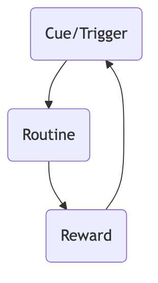

The Habit Loop¶
Most of our behaviors in life, estimated to be over 40%, are not driven by conscious decisions but by habits. From brushing our teeth first thing in the morning, to automatically buckling our seatbelts when driving, to instinctively lighting a cigarette when stressed, these behaviors operate in our brains in an almost automatic mode. The Habit Loop, a powerful neurological model explaining how habits form and operate, was proposed by scientists at MIT and popularized by author Charles Duhigg in his book The Power of Habit.
The core idea of this model is that any habit, whether good or bad, is composed of three interrelated, cyclical parts. Understanding the mechanism of this loop is the fundamental prerequisite for diagnosing and breaking a bad habit, or designing and cultivating a good one. It provides us with an "X-ray of habits," allowing us to clearly see the underlying code that drives our daily behavior at a subconscious level.
The Three Components of the Habit Loop¶
A complete habit loop consists of the following three logical steps, forming an efficient "automatic shortcut" in the brain.

-
Cue
- Function: This is the "trigger" that initiates the entire habit loop. When the brain receives this specific cue, it automatically and unthinkingly begins to execute the associated routine.
- Common Cue Types:
- Time: For example, 3 PM (cue: time to get a coffee to perk up).
- Location: For example, arriving home and seeing the sofa (cue: time to lie down and watch TV).
- Emotion: For example, feeling anxious or bored (cue: time to scroll through social media).
- Specific People: For example, seeing a certain friend (cue: time to go for a cigarette together).
- Preceding Action: For example, finishing dinner (cue: time for some dessert).
-
Routine
- Function: This is the habitual behavior triggered by the cue that we actually perform. It can be extremely complex or extremely simple.
- Examples: Picking up the phone, opening TikTok, and endlessly scrolling; taking a piece of cake from the fridge; or, putting on running shoes and going for a run.
-
Reward
- Function: This is the key to solidifying and strengthening the entire loop. The pleasure derived from the reward sends a strong signal to our brain: "Hey, that 'cue-behavior' combination felt good. Next time you encounter the same cue, remember to repeat this behavior!"
- Examples: The novelty and information stimulation from scrolling TikTok; the pleasure of sugar and fat from eating cake; the physical and mental comfort from endorphin release after running.
How to Apply the Habit Loop to Change Habits¶
The most powerful aspect of the Habit Loop model is that it provides us with a clear, actionable framework for changing habits. The core principle of this framework is: you cannot truly "eliminate" a bad habit, but you can "replace" it. That is, keep the old "cue" and "reward," but substitute the old, harmful routine with a new, healthier one.
-
Step One: Identify Your Habit Loop
- Choose a bad habit you want to change (e.g., wanting to snack at 3 PM every afternoon).
- Spend a few days consciously observing and recording the complete loop of this habit.
- Identify the Routine: This is usually the easiest. The behavior is "eating a snack."
- Identify the Cue: When the urge to snack arises, immediately ask yourself: "What time is it now? Where am I? How do I feel? Who is around me? What was I just doing?" By recording, you might find that the cue is "around 3 PM, feeling a bit bored and tired from work."
- Identify the Reward: Ask yourself, "What do I truly get after eating the snack?" Is it the taste of the snack itself? Or the brief sense of "break" from work? Or the "social connection" from chatting with colleagues? Identifying the true "craving" is key to finding an effective substitute.
-
Step Two: Design a New "Routine"
- You need to design a new, more positive routine, but it must provide you with the same "reward" as the old behavior.
- If you find that the true reward behind snacking is a "brief break from work," then the new routine could be: "Stand up, stretch by the window, and take a few deep breaths," or "Find a colleague and chat about non-work topics for 5 minutes."
-
Step Three: Create a Clear Execution Plan
- For your new habit loop, create a clear, actionable plan. The format is: "When [cue] appears, I will immediately perform [new routine]."
- For example: "Next time, when I feel bored at work at 3 PM, I will immediately stand up and go to the pantry to make myself a cup of tea."
-
Step Four: Deliberate Practice and Patience
- Habit change doesn't happen overnight. In the initial stage, you need to consciously and deliberately execute your new plan. When the old urge appears, you need to consciously "brake" and initiate the new routine.
- Every time you successfully execute the new loop, you strengthen its neural connection in the brain. Persist, and the new behavior will eventually become automatic, just like the old habit.
Application Cases¶
Case 1: Breaking the Bad Habit of "Scrolling on Phone Before Bed"
- Old Loop:
- Cue: 11 PM, lying in bed.
- Routine: Pick up phone, start aimlessly scrolling social media or short videos.
- Reward: Stimulation from new information, temporarily forgetting the day's fatigue.
- Change Strategy:
- Identify Craving: The craving is for "mental relaxation" before sleep.
- New Routine: Replace with a healthier behavior that provides the same sense of relaxation. For example, reading a light novel or listening to a soothing podcast.
- New Plan: "When I lie down in bed at 11 PM, I will immediately pick up the Kindle by my pillow and start reading."
Case 2: Cultivating a "Daily Exercise" Good Habit
- Goal: To develop a daily exercise habit.
- Design Loop:
- Cue: Choose an extremely stable cue, such as "Every morning as soon as I get dressed."
- Routine: Put on running shoes, go out for a brisk 15-minute walk (start with a simple, low-barrier behavior).
- Reward: After exercising, allow yourself a delicious cup of coffee, and record your exercise achievement, feeling a sense of control and vitality.
Case 3: The Marketing Miracle of Febreze Air Freshener
- Background: Procter & Gamble initially positioned Febreze as an "odor eliminator," but market response was lukewarm. This was because people living in odorous environments (e.g., those with many pets) had already become "nose-blind" to the odors, so there was no "smelling an odor" cue.
- Redesigning the Loop: Market researchers found that a group of housewives would spray Febreze as a ritualistic end to their cleaning after cleaning the house.
- Cue: Just finished a satisfying cleaning job.
- Routine: Spray Febreze in the clean room.
- Reward: Smelling the fresh, fragrant scent of Febreze, which became an olfactory reward for "cleaning job well done."
- Result: Procter & Gamble quickly adjusted its marketing strategy, repositioning Febreze from an "odor problem solver" to a "creator of pleasant experiences," and added more appealing scents. Febreze sales soared, becoming a multi-billion dollar super brand. This case perfectly demonstrates the immense business power of utilizing and designing habit loops.
Value of the Habit Loop Model¶
- Provides a Diagnostic Tool: Offers a clear, profound analytical framework for understanding and diagnosing our own and others' behavioral patterns.
- Provides an Actionable Path to Change: Clearly points out that the key to changing habits is to "replace the routine," rather than fighting the cue or giving up the reward.
- Extremely Wide Applicability: Can be used not only for personal growth but also in product design, marketing, organizational management, and many other fields, by designing effective "habit loops" to guide and shape user behavior.
Extensions and Connections¶
- Tiny Habits: BJ Fogg's Tiny Habits model can be seen as an extremely subtle and practical development of the Habit Loop theory. Its "anchor-tiny behavior-celebration" recipe is one of the most effective applications of the "cue-routine-reward" loop, efficiently building new neural pathways by making the "routine" extremely tiny and designing an immediate "celebration" (internal reward).
Reference: Charles Duhigg's global bestseller "The Power of Habit: Why We Do What We Do in Life and Business" is the most core and authoritative literature popularizing and explaining the "Habit Loop" model. The book synthesizes extensive neuroscience research and vivid business and social cases, profoundly revealing the immense power of habits in our lives.